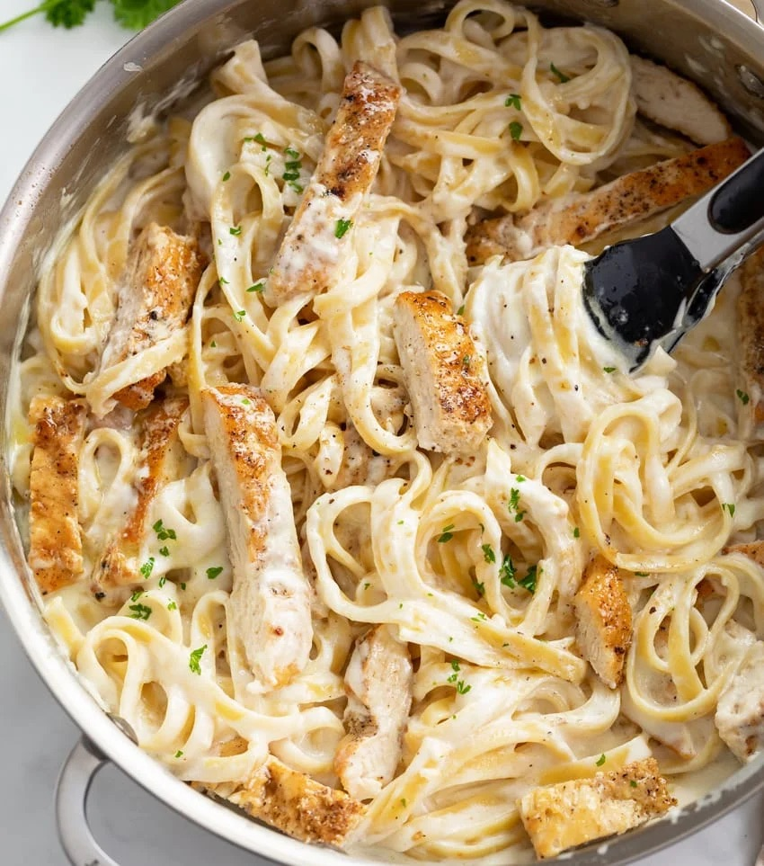
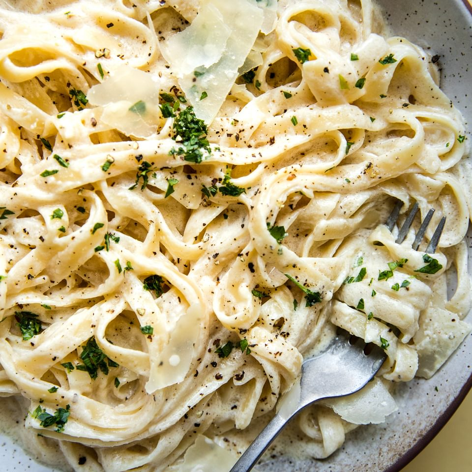

Chicken Alfredo

Quick, Easy, and Delicous in Under 30 Minutes!
Need something quick to make on the weekends? This easy Chicken Alfredo recipe includes golden pan-fried seasoned chicken breasts and tender noodles, coated in the most dreamy cream sauce ever. A showstopper meal and its all done in just over 30 minutes!
Ingredients
- Chicken
- Pasta Noodles
- Alfredo Sauce
- Olive Oil
- Butter
- Salt
- Pepper
- Heavy Whipping Cream
- Parmesean Cheese
- Garlic

How to cook!
- Boil the noodles: Cook the Fettuccine al dente, according to package instructions
- Cook the chicken: Season the chicken, then pan-fry in oil and butter, for 6 minutes a side, or until an internal temperature reaches 165 degrees F. Transfer to a cutting board and let rest for a few minutes, then cut into 1/2-inch thick slices. Tent with foil, while you prepare the sauce.
- Make the Alfredo sauce: Using the same pan you used to cook the chicken, the cream, butter and seasonings are incorporated and simmered on medium-low heat until thickened then the Parmesean is added in until melted and smooth.
- Assemble: Drain the pasta, reserving some of the liquid to loosen the sauce (only if necessary.) Toss immediately with the Alfredo sauce. Divide the pasta among serving bowls and top with a few slices of cooked chicken. Garnsih with parsley, more Parmesean, and black pepper if desired.